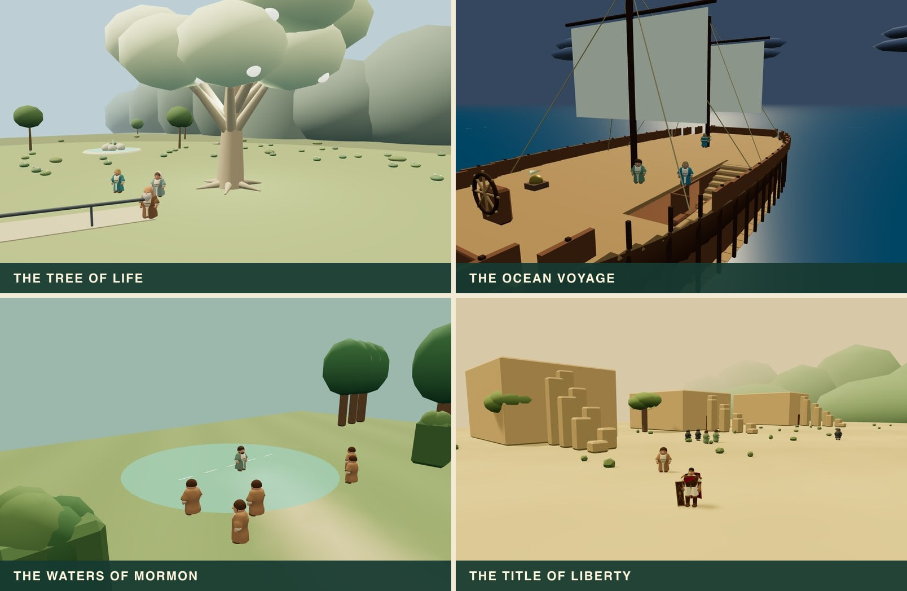
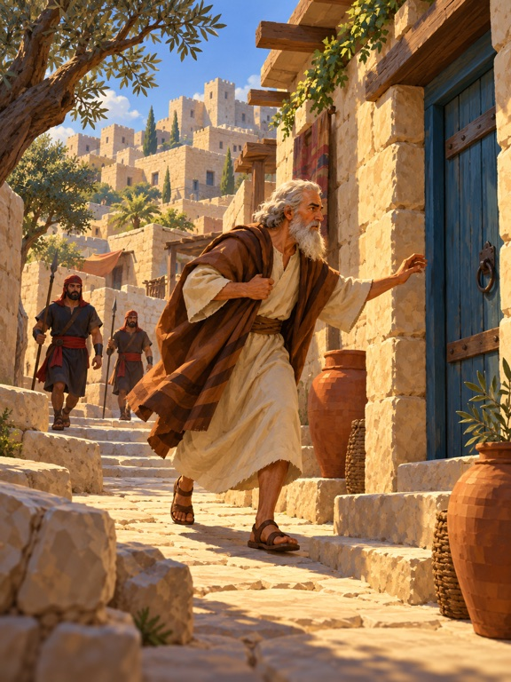

Run & jump
Move, then press Jump. Hold Jump for a higher leap; release earlier for a shorter one.
A browser adventure · Instruction booklet
Step into the stories.
Find your own adventure.

26 Book of Mormon adventures.
One gallery. A world beyond every
painting.
Free to play · Computer, phone & controller
01 · Welcome, explorer
Welcome to Super Mormon, a free 3D Book of Mormon adventure game. Run through ancient streets, follow the iron rod, help build a ship, and discover places worth taking the long way around.
This is a game of movement, exploration, and helping people. Different adventures ask you to navigate, carry supplies, climb, herd, sneak, or time your next move. Read the current objective, look around, and give things a try.
02 · Getting started
03 · Know your controls
In the move descriptions, Jump, Action, and Crawl mean the controls below. The game’s button hints change with your input device.
| Do this | Keyboard & mouse | Phone / tablet | Standard gamepad |
|---|---|---|---|
| Move | WASD or arrow keys | Left virtual stick | Left stick |
| Jump | Space | A | A / bottom face button |
| Action | E | B | B / right face button |
| Crawl | Hold Shift or Z | Tap Z to toggle | Hold LT |
| Look around | Drag the game view; Q / C orbit left / right | Drag the view outside the controls | Right stick |
| Recenter camera | R | ↻ button | LB |
| Pause | Escape or P | Ⅱ button | Start / menu button |
Gamepad lettering varies. These are the game’s standard browser mappings; an adapter may report buttons differently.
04 · The movement handbook
Practice on open ground first. Move relative to the camera, and recenter it when you need a clearer view of the next landing.
Move, then press Jump. Hold Jump for a higher leap; release earlier for a shorter one.
Get a running start, then press Crawl + Jump. Use the extra distance to cross gaps.
Stand still, hold Crawl, and press Jump. Leave room behind you.
Keep running and press Jump again as you land. Chain another landing jump for the triple. These are ground-to-air combinations, not extra jumps in midair.
While running, reverse direction and jump during the turn.
Jump against a solid wall, then press Jump again while near it to kick away.
Use Crawl while moving to get low. In the air, press Crawl for a ground pound.
Jump toward a reachable edge. Move toward it or press Jump to pull up; Crawl lets go.
Jump toward a climbable tree or pole. Move up / down to climb; Jump pushes away and Crawl lets go. Not every tree is a climbing route.
Action picks up a nearby carryable bundle. Action again throws it; Crawl + Action sets it down.
On touch screens, Z stays toggled until you tap it again. Turn it off when you want to run normally. For an in-game refresher, choose Pause → Moves & practice.
05 · Your 26 adventures
The gallery opens these adventures in order. These introductions leave the discoveries to you. Each scripture link opens the relevant source chapter; chapter ranges name the broader reading.

Find your bearings among the streets and passages. Learn to look around before rushing ahead.
1 Nephi 3Look for the indigo doorway around the western homes. Turn around the outside of the dwelling at the cross street to find its entrance.
Explore the palace setting as the brothers seek the plates of brass.
1 Nephi 3Head to the far end of the courtyard and approach Laban. After the encounter, return to your brothers.
Search the family’s imagined home during the effort to obtain the plates.
1 Nephi 3Search every room for the five family treasures, including upstairs. When you have them all, return to the courtyard entrance.
Follow the brothers’ attempt to exchange their property for the record.
1 Nephi 3Bring the treasures to Laban first. When the objective changes, keep your brothers with you as you head for the city gate.
Return through the city after dark. Watch your route and the people around you.
1 Nephi 4Begin by searching the moonlit streets for Laban. Read the next objective after the encounter rather than heading straight for the plates.
Enter Lehi’s vision, follow the iron rod, and discover its invitation to share joy.
1 Nephi 8; 11–15After the opening scene, walk forward from your starting position toward the narrow path and its iron rod. When the prompt appears, hold Action to grasp the rod, and keep holding it as you move along the path through the mist.
Help provide food for the family. Follow directions into the mountain and take care with your aim.
1 Nephi 16Your first task is target practice on the mountain. Follow the trail up before looking for food for the family; the objective will change as the story unfolds.
Explore Bountiful and help with the work of building an imagined vessel.
1 Nephi 17–18Begin with the mountain trail and the prayer prompt. The ore, tools, and timber tasks come afterward, in the order shown by the objective.
Explore life aboard the ship through an imagined child’s visit as the voyage unfolds.
1 Nephi 18Find Laman and Lemuel below deck first. Look for the stairs between deck levels rather than trying to jump through the deck.
Explore the shore and lead willing families through the valleys to a new settlement. This scene condenses years.
2 Nephi 4–5Explore inland from the shore and look for Lehi. Later, when the families follow, take the valley route toward the blue beacon.
Work among the trees in a playable adaptation of the allegory. Attend to the task at hand.
Jacob 5Find the servant in the olive garden before beginning the tree work. Follow the current task rather than trying to tend every tree at once.
Explore an imagined settlement and find Jacob as questions of faith come before the people.
Jacob 7Look for Sherem among people in the city and its outskirts. Follow the changing objective as the encounter develops.
Find Alma in secret. Look for a safe way through the landscape and avoid the spies.
Mosiah 18Watch the spies’ turning heads from behind a wall. Cross the open space when they look away; stay alert for the next safe place to wait.
Help with the king’s flocks. Watch how your position guides animals where they need to go.
Alma 17–18Begin by guiding the flock toward the water at Sebus. Stand on the side away from the water and adjust your position in small steps.
Climb through the city and help Moroni rally the people.
Alma 46Find the quiet prayer court first. After the opening sequence, follow the objective to the climbing route through the city.
Race up the mountain in an imagined effort to warn Lehonti. The historical outcome is remembered, not rewritten.
Alma 47Follow the mountain’s spiral route all the way up to Lehonti’s camp. Cutting across the slope is not a substitute for learning the route.
Hear a warning, consult a scout, and hurry to the pass ahead of Morianton’s group.
Alma 50:25–36Hear the maidservant’s warning, then find Teancum’s scout beside the western ridge. Plan your route to the pass before the race.
Navigate past sentries and find your way back to camp. A quiet route is more useful than a hasty one.
Alma 51:32–37Meet your servant before leaving camp. Watch the sentries and use the stones and trees to plan a quiet crossing.
Help carry out the rescue plan. Pay attention to deliveries and the route across the wall.
Alma 55As Laman, receive Moroni’s orders before approaching the guards. Later deliveries use different parts of the wall, so reread each objective.
Scout the city, gather materials, and help prepare a way over its defenses.
Alma 62Start by scouting from the western wall and looking toward the eastern entrance. Return to the army before gathering ladder materials.
Climb the city wall, deliver the message, and find a way out.
Helaman 13–16Look for the outside ledges leading up the city wall. Line up each jump with the camera before you climb higher.
Visit a town waiting for the promised sign. Help its people as the night approaches.
3 Nephi 1Head for the gathering square beside the waiting families. The west stairs lead toward the rooftop watcher when that objective appears.
Help a community gather and prepare. Think about routes and the supplies people need.
3 Nephi 3–4Find the refuge granary and note its entrances. Carry provision loads there, then help guide the southern family along a clear route.
Explore an imagined temple precinct and approach the sacred gathering with reverence.
3 Nephi 8–11; 17Approach the gathering near the temple and listen. Optional rooms and garden discoveries do not unlock or earn the sacred encounter.
Explore a rebuilt city, fit timber sections into a garden bridge, and carry shared seeds across the span.
4 Nephi 1Timbers wait in the two western workshops. Fit each at the western abutment. The ford offers another way around, but take the shared seeds across the bridge you restored.
Choose a path up the hill to the record chamber, then bring its secured carrier down to the valley refuge.
Mormon 1:1–5; 2:17; 4:23; 6:6Broad stairs flank the central ridge. The carrier needs both hands, so use the stairs on your return. Watch the spillway warning, or take the dry eastern bank.
06 · A little help
Getting stuck is part of exploring. These hints offer a nudge without giving away the whole route.
Finish the earlier unfinished story first. Paintings unlock in order, and completed stories stay available for replay. Later paintings are in side hallways and on upper floors.
Read the current objective. Move closer and look for an Action prompt; you may need to finish a task or set down a carried object first.
Recenter the camera, line up on flat ground, and leave space for a running start. Hold Jump for height. Use a long jump for distance, and practice landing before adding jump combinations.
Pause to watch the patrol, use cover, and choose when to cross open ground. Crawling can help you move carefully; it does not make you invisible. A retry is a chance to try another route.
Read the delivery prompt and bring the bundle close to the target. Crawl + Action places it down gently; Action on its own throws it.
Try approaching from the side opposite the destination. Make small changes to your position rather than chasing straight through the flock.
Reread the objective and look for landmarks, signs, or a task marker where the adventure provides one. Turn the camera and check side routes. Pause → Restart this scene starts the current adventure over.
07 · For families & scripture readers
Looking for an LDS or Mormon video game, a Book of Mormon game, or something to play together on a Sunday? Super Mormon is made for families who enjoy scripture-inspired exploration. Families can decide how it fits their own Sabbath traditions.
The game is designed with older children in mind. Later adventures ask for more navigation, timing, stealth, and planning. Stories include danger, hunting, war, death, and sacred events; a parent may want to accompany younger players. This is an audience description, not an official age rating.
Try taking turns: one player handles the controls while another reads the objective or spots a path. After an adventure, read its source chapter together. Ask, “Which details came from the scripture? Which were imagined for the game? What did the people choose to do?”
08 · Keep your adventure going
Found a problem? Send feedback on GitHub. Include the adventure name, what happened, and your device and browser.